Imagine você sendo um morador de Ipojuca em 1595. Seus familiares e amigos do Recife foram expulsos das suas residências e outros você não os reconhece mais, passaram a viver igual aos portugueses. Algumas mulheres até casaram-se com portugueses, que eram os mesmos homens que realizariam assaltos contra seus irmãos no litoral sul. Esses portugueses forçariam você a trabalhar em troca da sua própria vida, não poupando os velhos nem as crianças. Toda essa desumanidade tem um rosto, tem um costume próprio, suas construções, sua fala, suas vestes, e tudo aquilo parecia que devoraria você em algum momento. O que estava acontecendo com o seu mundo?
Alguns irmãos da terra preferiram se juntar a esses invasores, outros se afastaram. Já perdi muitos irmãos, enquanto outros ainda não entenderam que estamos em guerra.
Na prática, entender a aplicação dessa força sobre nossas vidas é realmente muito difícil. Você enxerga o colonizador, você sabe das intenções dele, você sabe o sofrimento que ele te causa, mas é difícil agir em um mundo onde as ferramentas de dominação pertencem a ele, e na grande maioria das vezes, é difícil até entender que você está sendo explorado. Com quantos anos você percebeu que a grande maioria do conteúdo cultural que consumimos hoje vem de uma potência que nos coloniza?
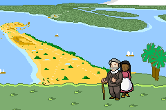🌴🌴🌴🌴
🦀 Quando a Inglaterra invadiu Pernambuco
Não era fácil para o povo caeté entender o que acontencia. Era óbvio para você naquele momento, caeté ipojucano, que um grupo de pessoas gostaria de te ver escravizado, mas não era fácil entender por quê alguns de seus familiares ou amigos aceitaram se juntar a essas comunidades de pessoas portuguesas. Para completar, havia ainda outros grupos da política nativa, os tabajaras e potiguares, cada um reagindo à sua maneira. Tudo era muito complexo e a única ferramenta disponível para a maioria dos grupos, principalmente os de fora da comunidade portuguesa, era a violência.
Para tornar as coisas ainda mais complicadas, os portugueses que eram os piratas das terras brasileiras, eram pirateados, por sua vez, por ingleses e franceses em busca de açúcar e pau-brasil. As ameaças constantes tornavam qualquer viagem a navio um pesadelo por aqui.
Atenção às perspectivas
É importante notar que os relatos da história foram escritas por brancos no século 16, logo, eurocentradas. Mas se observarmos a população de Pernambuco da época, seria incorreto afirmar que a historinha de briga europeia é a única história da gente. Os nativos eram massivamente a maioria, e como já sabemos, seus interesses políticos estavam em jogo ali também.
Como já discutido, os tabajaras aliaram-se aos portugueses com o objetivo de dominação política entre os seus. A guerra contra os caetés não acabou, apenas se ressignificou. Todos os líderes nativos de Olinda eram, consequentemente, inimigos de muitos dos povos que foram mortos ou expulsos do Recife. E os caetés gostariam de reaver seus direitos sobre sua terra e, portanto, não deixariam barato para os tabajaras e portugueses.
Desde o início da colonização portuguesa, os caetés, especialmente no litoral sul de Pernambuco mantiveram contatos com outros invasores europeus, que também viram vantagem em se aproveitar da existente rachadura na configuração daquelas nações. Para entender as entrelinhas desse período, é fundamental prestar atenção que absolutamente qualquer coisa, além de violência, que pudesse servir de auxílio contra os portugueses e tabajaras de Olinda seria utilizado. No século 16, muitos dos nativos escravizados sob o controle dos invasores e tabajaras aliados eram caetés.
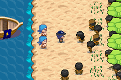Os franceses em particular estabeleceram uma relação curiosa com os nativos de Pernambuco. Essa relação aparece como "exploração" na literatura do começo do século 16, mas depois se converte em "aliança" na virada do século. A resistência caeté nos territórios ainda não invadidos pelos portugueses foi fortemente auxiliada pelos franceses. E aos leitores mais céticos, não pensem que os nativos eram indivíduos animalescos a-políticos. Durante o primeiro século de invasão, eles não apenas se interaram da política europeia nas Américas, como também estabeleceram pactos com os invasores. Enquanto algumas nações tupis se alinharam aos portugueses, as demais se alinhariam a outros europeus, como os caetés e os franceses no litoral sul de Pernambuco. A presença da França influenciou o pensamento anti-português na região e deixou algumas marcas na vida do nosso povo, como o uso da palavra "Marim", usada quando um nativo se referia a uma comunidade de brancos.
"[Duarte Coelho] achou tão rígida oposição e resistência no gentio da nação Caeté, que dominava todo aquele distrito até o rio de São Francisco com a ajuda de alguns franceses, que lhe foi necessário ganhar a palmos o que se lhe concedera a léguas".
Também nesse período, mais especificamente em 1578, uma frota de navios ingleses saqueou Salvador, na Bahia, por duas semanas, tocando o terror nos portugueses por lá.
Textos passados para melhor entender a configuração política nativa estão nas leituras no final dessa página.
E o que rolava nesse tempo lá na Europa?
Portugal e Espanha são até hoje dois territórios que se confundem historicamente. Acontece que depois de expulsar os mouros islâmicos e os espanhóis da sua terra, Portugal estabeleceu-se como um império a parte, e seu único caminho de expansão era o mar apenas. Portugal já tinha certa ciência da navegação, e com isso tornou-se o maior invasor da época, tomando a si vários territórios fora da Europa, como o Brasil.
Em uma guerra entre Portugal e o Marrocos (mais uma cruzada contra os muçulmanos), o rei português acabou morrendo e ele não tinha filhos. Como não deixou nenhum herdeiro, sua dinastia se encerrou e o trono acabou sendo assumido por um parente mais distante espanhol. O território e as invasões portuguesas passaram legitimamente ao controle da Espanha. Realeza tem dessas coisas.
Durante esse mesmo período, a Inglaterra descobria as maravilhas do mundo, realizando viagens que contornaram a África, visitaram a Ásia oriental, as ilhas do Pacífico e a América. Todas as áreas já eram invasões portuguesas ou entrepostos comerciais com Portugal. Aqui ganhamos uma ótima nova perspectiva do planeta: começamos a observar descrições de outros povos ocidentais sobre o oriente, e também uma descrição do quê era Portugal.
Acontece que Portugal sempre foi um país minúsculo que dependia de comércio forçado pra dar certo. Isso se refletia na qualidade de suas embarcações e na estrutura de suas colônias. Tudo isso só sabemos porque outro povo passou a registrar suas perspectivas.
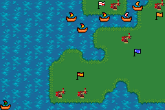A guerra da Espanha e Inglaterra repercutiria no porto de Pernambuco.
E os ingleses também registraram que os Brazilmen, os navios que faziam a rota Brasil-Europa, eram super fáceis de sequestrar, não estavam preparados para lidar com os navios de guerra que as outras nações despejavam aos oceanos. Inclusive, a Espanha (unida agora a Portugal), que estava em guerra contra a Holanda e a Inglaterra, teve sua invencível armada* derrotada pela primeira vez em mares ingleses. Os espanhóis capturados foram interrogados e revelaram a situação da costa do Brasil com informações precisas. Os manuscritos apreendidos viralizaram na imprensa inglesa da época. Um deles, de autoria de um mercador português, dizia:
"Pernambuco é a mais importante cidade de toda aquela costa, e tem cerca de 3 mil casas, com setenta engenhos de açúcar, um grande estoque de pau-brasil e abundância de algodão".
* Armada é o coletivo de navios de guerra.
🌴🌴🌴🌴
A várzea do Capibaribe no final do século 16
Como vimos em textos anteriores, toda a produção dos engenhos escoava pelos caminhos lamacentos e pelos rios do Recife direto pra São José e Santo Antônio para serem levados ao porto pelos escravizados, vigiados o tempo inteiro pelos capitõezinhos do senhor do engenho. Em "camboas", jangadinhas, eles passavam a produção pouco a pouco para a "vila dos arrecifes", o que chamamos hoje de bairro do Recife, o Recife Antigo (em um tempo que ele nem era antigo, nem mesmo era "Recife").
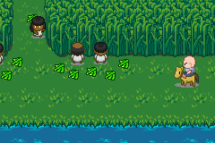Nesse lugar, ficava o porto de Pernambuco, administrado de Olinda, que era uma das cidades mais ricas do mundo no momento (!!!), apelidada de "Pequena Lisboa", lá se aproveitava com uma abundância ridiculamente extravagante as benesses do comércio (e roubo) com o Oriente, além do lucro sobre as maiores fazendas de Pernambuco. O povo olindense se deleitava com banquetes fartos, estofados cor-de-vinho chiquérrimos franjados de ouro, onde as senhoras vestiam veludo, onde os chefes nativos aliados desfilavam com panos cor-de-damasco e cordões de ouro e colchas poooodres de finas diretamente da Índia. Comumente navios que iam do Oriente para a Europa faziam um pitstop pelo porto de Pernambuco para reabastecer sua tripulação de mantimentos e comercializar também com a vila de Olinda, onde diziam que "se acha mais vaidade que em Lisboa".
Mas como sabemos, todo circo precisa de uma plateia. Enquanto Olinda encenava essa palhaçada portuguesa, o resto de Pernambuco apanhava de chicote. O trabalho árduo de transportar coisas para o porto dava errado em muitas das vezes, quando as camboas viravam suas mercadorias dentro do rio. Como haviamos discutido, esses erros não eram perdoados facilmente, escravizados eram punidos de forma severa, como se fosse possível transferir a perda de lucros do senhor à dor física dos escravizados. Somados a esses homens que estavam sempre descarregando mercadorias no porto, outras famílias viviam de forma fixa em uma pequena comunidade. Lá estavam pescadores e trabalhadores do próprio porto.
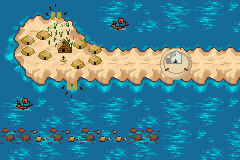A vila dos arrecifes nasce com algumas cabanas, quase uma arquitetura híbrida euro-nativa de moradia dos pescadores; uma capelinha, a do Corpo Santo; galpões quase improvisados para armazenar o que embarcaria para Europa; e um fosso cavado e elevado no areial perto do fim da parede de arrecifes, chamado de "forte de São Jorge Velho", uma estrutura improvisada pra colocar uns canhões e fazer a defesa do porto. Pobre como toda a estrutura portuguesa pelo mundo, como relataram os exploradores ingleses da época.
🌴🌴🌴🌴
Amanheceu o dia 29 de março de 1595,
E os líderes portugueses mobilizavam todo mundo no porto na correria. Homens deveriam estar posicionados no forte na preparação da munição dos canhões porque navios ingleses brotaram no porto de repente! Mas se atreveram a aparecer ao amanhecer justo na frente da vila de Olinda?
Tiros partindo dos canhões das praias olindenses não acertaram as dezenas de piratas que vieram roubar os portugueses, que nos roubavam, por sua vez. Foi uma manhã muito confusa.
Três navios holandeses estavam na boca dos arrecifes, na entrada do porto, preparando-se para fazer frete contratado para os portugueses. Sempre havia holandeses no porto fazendo essa tarefa, já que não havia navios portugueses suficientes para levar tudo para a Europa.
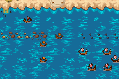Os piratas vieram com suas velas estendidas em direção a entrada dos arrecifes com a intenção de massacrar os holandeses e entrar no porto, mas para a surpresa de todo mundo, os holandeses deixaram-os passar! Toda a gente rica de Olinda entrou em desespero total. Antes que os piratas entrassem no alcance de fato do forte de São Jorge Velho, um bote partiu de Olinda para tentar comunicação com os ingleses. E as coisas pioraram com a resposta do capitão inglês James Lancaster, que disse:
"Quero as mercadorias do galeão, e por causa delas tinha vindo, e as haveria de ter, como em breve iriam ver".
O galeão que ele se referia era um dos navios que, vindo da Índia, parou por aqui e para o azar da sua tripulação, encalhou-se pelos arrecifes cruéis desse porto. Nossa gente havia desembarcado as mercadorias de fato e as estocou pelos armazéns. Mas como esses ingleses ficaram sabendo disso? Não importava mais, a comoção geral estava estabelecida e os nossos certamente seriam enviados para fazer defesa frontal a esses navios de guerra. Não demorou muito, um navio inglês veio com toda sua velocidade de navegação em direção ao forte e se atirou, dando um cavalo de pau na praia, que virou o barco na areia de onde cerca de oitenta homens pularam instantaneamente para fora, todos gritando com armas de fogo vieram para tomar o forte.
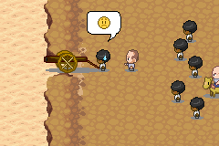Nosso nervosismo e falta de experiência de situações como essa fizeram com que disparássemos péssimos tiros onde não conseguimos derrubar nenhum daqueles homens. Vendo-os se aproximar armados, enquanto não tinhamos nada para nos defender além do próprio forte, decidimos nos debandar, ignorando as ordens dos portugueses, que nem eles mesmos haviam esperança, visto que fugiram com a gente. Antes que os ingleses alcançassem o forte, tomamos os botes do lado de dentro do porto, no rio Beberibe, e o cruzamos. Outros mais azarados tiveram que cruzar bravamente a nado e os portugueses fugiram para Olinda ou em botes subindo o rio, ou foram correndo mesmo. Nessa fuga, todas as famílias do porto também abandonaram suas residências e se abrigaram na ilha de Antônio Vaz.
Conta-se que essas famílias que abandonaram suas casas às pressas ficaram largadas sem uma terra onde fosse possível estabelecer moradia, já que toda a várzea do Capibaribe era agora "propriedade" de algum português. Voltaremos a essas famílias mais tarde.
🐚🐚🐚🐚
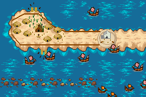Reeftown
Em dois dias de ocupação inglesa, o porto foi todo cercado com uma paliçada de nove pés de altura, havia patrulha em ambas as pontas, ao longo do rio, no mar e garantindo guarda para até uma milha de distância do porto, evitando que Olinda pudesse sequer tentar tomar o porto de volta. Assim como no Oriente, a estrutura portuguesa era pobre demais e os ingleses sabiam disso.
Os navios no porto revezavam entre carregamento e defesa, para que de forma eficiente pudessem ser todos entupidos com as especiarias ali encontradas. Inclusive os navios holandeses que estariam prestando serviço para os portugueses passaram para o lado dos ingleses! De forma intimidatória, era impossível se aproximar da vila dos arrecifes. Além da organização visível, os ingleses levantaram uma nova estrutura fortificada no areial com trincheiras, onde instalaram cinco dos canhões do forte português, apontados para Olinda.
Contam os relatos que os navios estrangeiros no porto do Recife chamavam tanta atenção que piratas em seus navios de guerra que passavam pelo porto se juntaram à cachorrada, o maior saque da navegação elisabetana agora se tornou saque de muitas nações.
A reação do povo
Os burocratas ricos de Olinda, desesperados, ofereceram pagamento para absolutamente qualquer pessoa que se prestasse a ser sentinela da entrada da vila, para que suas famílias não precisassem desempenhar tão arriscado papel. E, é claro, o povo também não queria estar no alvo dos mosquetes, das armas de fogo, dos ingleses. O que aconteceu foi que a gente simples da vila tomou esse pagamento oferecido pelos ricaços e não compareceu ao posto de vigia, acarretando na prisão de alguns, que preferiam a cadeia portuguesa do que entrar em conflito com os novos invasores.
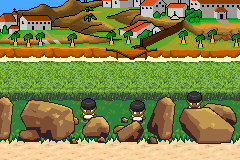Um episódio interessante dessa nova invasão conta que uma nau portuguesa desavisada chegou no porto de Pernambuco e os ingleses tomaram logo o barco para si. Desambarcaram toda a tripulação, composta de 60 africanos escravizadas e 50 portugueses livres. Todos os escravizados e as mulheres portuguesas foram expulsos da ocupação dos arrecifes, enquanto os homens portugueses foram usados como força de carga para empurrar as carroças. Nessa rixa de colonizadores, os ingleses contam em seus relatos, se referindo aos portugueses provando de seu próprio veneno escravagista, que
"foi para nós um grande alívio, sendo a terra muito insalubre para que a gente da nossa nação se entregasse a qualquer trabalho duro".
Por "insalubre", os ingleses se referiam ao calor tropical do porto, em uma fala carregada de um elitismo usado para justificar o trabalho forçado sobre os povos subjulgados. Tal acontecimento seria registrado como um "insolente abuso da vitória" pela historiografia portuguesa que hoje, contraditoriamente, mesmo depois de 500 anos, ainda não certificou-se de seu próprio insolente abuso contra os povos nativos da América.
Como se não pudesse ficar pior para os portugueses, a elite olindense (os principais comerciantes, os burocratas e os donos de fazenda) enviou uma comitiva para negociar uma saída com os ingleses. A ordem do almirante que liderava a invasão foi que deixassem os portugueses esperando durante o dia inteiro, sob o sol quente de abril, e que ninguém os recebesse. O próprio almirante escondeu-se em uma das embarcações holandesas para que não houvesse pista de sua presença. Questionado por sua atitude, o almirante, velho conhecedor dos portugueses, justificou:
"O que poderemos ganhar com conversas quando, com a ajuda de Deus, já conquistamos aquilo que viemos buscar? Devemos arriscar o que conquistamos pelas nossas espadas para vê-los tomar tudo de nós com palavras e ardis? Não há nenhuma sabedoria em agir dessa forma".
Ai dos portugueses se os caetés tivessem os conhecido a tempo!
E claro, essa invasão significou também uma janela de oportunidade para os caetés vivendo esse cativeiro português. No desespero, os senhores de Olinda se utilizaram de escravizados como vigias dos seus inimigos. E essas pessoas, forçadas a estar no meio da trincheira, aproveitaram para sabotar os planos de seu opressor. Muitos nativos encontraram formas de dar uma escapadinha e informar os ingleses do que se discutia em Olinda. As informações que nosso povo espontaneamente trouxe para os novos invasores foram fundamentais para prever as movimentações portuguesas, ajudando os ingleses a roubar equipamentos portugueses, desmanchando trincheiras durante sua construção e evitando ataques inteiros. Havia se juntado ao grupo de piratas alguns franceses que falavam tupi (e já conheciam os caetés). É de conhecimento que uma das reivindicações desses nativos era a de encontrar apoio contra os abusos cometidos. Apesar da incorporação de alguns homens nativos ao grupo dos invasores, os ingleses evitaram se envolver na colonização pernambucana, não firmando aliança com aquele povo escravizado, como é de se esperar de uma nação que, sim, via aquela gente como inferior.
🐚🐚🐚🐚
Enfim, o quebra-quebra
Conta a história que depois que dois espiões portugueses foram capturados dentro da vila dos arrecifes, eles foram enviados de volta a Olinda com a mensagem que "dali em diante, se algum português se aproximar, será enforcado imediatamente". Foi o suficiente para gatilhar o contra-ataque português organizado. Tropas de gente nativa e de portugueses desceram Olinda e foram recebidos com explosões de metralha, causando a perda de muitas vidas. Também sob ordens portuguesas, grupos de arqueiros nativos iam atirar flechas todas as noites nas paliçadas inglesas, sem fazer absoluto estrago, mas com a intenção de atrair ingleses para emboscadas, apesar de que os almirantes sabiam das intenções portuguesas desde sempre, e desdenhavam desses guerreiros nativos dizendo que eles "tinham mais o que fazer do que arriscar suas peles atrás de desgraçados sem roupa".
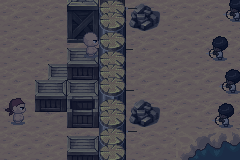Como parte da estratégia portuguesa, cercos mais pesados foram montados no caminho para acessar água potável no continente, onde era mais difícil que os ingleses penetrassem, forçando-os a terem que buscar água em partes mais distantes de Pernambuco. Além disso, nativos experientes em nado foram mandados para cortar as cordas das âncoras das embarcações invasoras mas foram interceptados antes.
Uma outra ação defensiva foi a de enviar barcos, troncos e qualquer coisa flutuante, saindo de Olinda em direção ao porto, em chamas e recheados de fogos de artifício. A ideia era que essas estruturas e suas labaredas se chocassem com as embarcações invasoras e as fizesse naufragar, mas os experientes invasores em seus navios de guerra conseguiram driblar todos esses ataques, descritos como "as maiores labaredas que já vi" por um mosqueteiro inglês que narrou a invasão.
Quando todo o saque já havia sido embarcado, não poupando nem as pratarias da igrejinha do Corpo Santo e os novos invasores se preparavam para partir, mais nativos vieram nos atualizar. Agora, os portugueses estavam próximos de concluir um novo fortim na saída do porto, para pegar todos os barcos ancorados na boca do Capibaribe e do Beberibe.
Assim que chegaram no local da nova fortificação, os construtores portugueses e tabajaras descarregaram a munição neles e fugiram de volta à Olinda. Os piratas ingleses e seus aliados perseguiram esses homens à pé e foram emboscados por uma incrível tropa de cinco mil homens, majoritariamente nativos. É importante lembrar que havia homens influentes entre os tabajaras, que se beneficiaram da aliança com os colonizadores, vivendo como a elite portuguesa em Olinda e negando muito ou totalmente sua cultura original. Esses influenciadores possuiam canal aberto com vários grupos nativos e constantemente recrutavam guerreiros para auxiliar os portugueses contra outras nações nativas.
Essa batalha, no pé de Olinda, fez com que os ingleses descarregassem toda a sua munição e perdessem muitos dos líderes da expedição. Finalmente, mesmo que com apenas cerca de 300 homens, conseguiram escapar dos 5 mil residentes. Embarcados, conseguiram com sucesso sair do porto com toda aquela mercadoria, sem perder um naviozinho, mesmo sob debaixo de tiros de canhão disparados de Olinda. Pararam em Pitimbu, no atual estado da Paraíba, como ponto de encontro, reabasteceram seus navios e zarparam para a Inglaterra, onde despejaram um dos maiores saques da história naval inglesa e certamente motivaram tanto o estabelecimento de colônias inglesas e francesas nas Américas, quanto motivariam uma futura invasão holandesa... ao porto de Pernambuco!
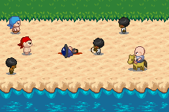Apesar da descrição épica dos ingleses, muito deve-se atribuir a quem realmente atuou politicamente para que, tanto o saque e o ataque contra os portugueses fosse possível, quanto que a contrarreação portuguesa tivesse alguma expressividade: tratava-se de uma disputa entre os caetés e os tabajaras.
Moral da história:
As disputas históricas em Pernambuco são populares
É fundamental perceber que apesar de toda a picuinha, de todo o circo europeu nesse momento no mundo, as comunidades locais, tanto nas Américas, quanto em África e no Oriente, continuavam suas disputas próprias. As guerras tupis em Pernambuco ganharam a participação dos portugueses, onde os tabajaras se beneficiavam de sua aliança para ofender seus inimigos caetés. Mesmo que toda a sua cultura fosse depenada perante o cristianismo português, ocupar aquela posição de privilégio era, apenas, uma ressignificação da disputa pelo poder local.
Como discutido em outros textos, a nomenclatura "tabajara" aparece originalmente, apenas, na descrição portuguesa dos nativos que se aliaram aos portugueses. Enquanto outras fontes da época, de outras nacionalidades rivais dos portugueses, descrevem a presença de duas nações: caetés e potiguares, não sobrando espaço para os tabajaras. Acontece que sobre essa linha tênue nominal entre aqueles povos, caetés e tabajaras se confudem na história, e como forma de evitar um possível apagamento das comunidades "rostos da terra" (taba-yará), elas precisam ser registradas. Amigas ou rivais, essas populações em guerra política definem a história da nossa cidade e acendem uma luz sobre o protagonismo nas populações locais, constantemente embranquecidas ou apagadas para dar lugar a alguma figura branca.
Observando o grande quadro das coisas, o preço pago pelo alinhamento com os europeus foi caro. Afinal, o sádico aliado português nunca respeitou essa população, mas utilizou a aliança como forma de pacificar o ambiente para potencializar as possibilidades de exploração de Pernambuco. Como efeito contrário, surge por aqui uma estrutura de violência do povo contra si mesmo, uma proto-polícia, uma organização que se alinha por interesses próprios e imediatos aos grupos coloniais, e que tenta "controlar" as rebeliões nativas de expurgação dos portugueses. É errado acreditar que isso configura alguma ingenuidade, os nativos aliados dos lusitanos tinham total consciência desse preço pago e da proteção dos seus iguais dentro dessa estrutura.
Essa unidade nativa, dos falantes de tupi, que nós tentamos formar em nossas críticas à colonização, nunca existiu. Eram comunidades com seus interesses próprios, divergentes entre si, e com poder de decisão talvez amargo às nossas expectativas contemporâneas. Mas não deve ser assim. Os nativos possuiam seus motivos, o que não tira absolutamente nada da culpa portuguesa (e europeia como um todo nas Américas) do trato aos viventes desse lugar, do lucro sobre os corpos desses povos subjulgados, mesmo daqueles que se aproveitavam de certo privilégio. É muito importante ter em mente que, além das técnicas cruéis de retórica dos colonos portugueses, seu poder de fogo coloca em cheque a existência de qualquer povo ali nativo que viesse a os contradizer (o que ainda não espantou a maioria dos caetés).
É muito difícil entender, dentro de suas disputas cotidianas, que você é parte de um processo maior de colonização, de um processo que cria microcosmos que entregam algum benefício local a você, mas apenas com a intenção de explorar. Utilizamos inconscientemente os vários símbolos de poder emprestados dos impérios coloniais como réguas para inferiorizar aqueles que não tem acesso a esses poderes. É assim que de dentro do carro observamos os passageiros dos ônibus como coitados; é assim que sem pensar agregamos um valor extra às pessoas que tem o iPhone mais moderno; é assim que de fora consideramos as manifestações religiosas não-cristãs como bárbaras, selvagens, exóticas e uma "ameaça" às nossas vidas; dentre tantas outras formas de perpetuação do pensamento colonial, que seria o berço do capitalismo.
⚓⚓⚓⚓
Bônus: A fundação de uma nova vila
Durante a invasão inglesa, aquelas muitas famílias fugidas da vila dos arrecifes, que ficaram desamparadas na ilha de Antônio Vaz e no continente, causaram um impacto na reconfiguração das ocupações em Pernambuco. Acontece que a ocupação inglesa durou um mês cheio, 31 dias, e por causa de todo esse tempo, muitas dessas famílias acabaram sendo absorvidas pelas fazendas das redondezas. Um senhor português, a fim de povoar seu engenho, convidou essas famílias para trabalhar em sua fazenda, arrendou terras dentro dela, que ficava entre os rios Jaboatão e o Duas Unas (na época registrado como Una, mas não confundir com o rio Una do litoral sul do estado de Pernambuco), fundando a vila do Jaboatão, que cresceu tanto depois da invasão inglesa que em 1598 recebeu a construção de uma paróquia própria, a matriz de Santo Amaro, que veio a ser deslocada em 1691 depois que o centro da vila havia mudado drasticamente (logo, a atual construção não está no mesmo lugar da original).
Comparação fora de escala da ocupação do porto dos arrecifes, 1609 e 2020 (passe o mouse ou toque).
VEM AÍ
Por incrível que pareça, apesar de toda saqueada, a vila dos arrecifes foi deixada intacta. Nada foi destruído nem incendiado e as estruturas construídas pelos ingleses não apenas se mantiveram como foram aproveitadas. Como a rinha de europeu estava só começando no Atlântico, os nativos e a crescente população trazida de África teriam mais momentos de contraponto à opressão portuguesa. Sabemos que no final das contas, as opressões acabaram se intensificando, mas no caminho tivemos eventos que foram moldando nossas vidas atuais. Em cima dessa frágil estrutura colonial portuguesa, observamos o nascimento dos quilombos, e uma nova invasão europeia, essa de maior duração durante o século 17 que acabara de virar. Vem aí...
Mais em postagens passadas
Referências
Esse texto foi fortemente baseado na pesquisa de Jean Marcel e Sheila Hue "Piratas no Brasil". Ainda outras informações de artigos e livros de suporte:
- Piratas no Brasil - As incríveis histórias dos ladrões dos mares que pilharam nosso litoral, Jean Marcel Carvalho França e Sheila Hue (2014);
- Memória Indígena, arqueologia e patrimônio cultural: Reflexões sobre a presença indígena nas narrativas sobre a fundação de Olinda, de Ricardo Pinto de Medeiros (2005);
- O trato dos viventes, Luiz Felipe de Alencastro (2000);
- Visions of Savage Paradise, Rebecca Parker Brienen (2006);
- A igreja matriz de Santo Amaro, Jaboatão dos Guararapes, na Biblioteca do IBGE;